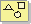
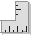

Introduction to Disciplines
A discipline shows all activities
you may go through to produce a particular set of artifacts. We describe
these disciplines at an overview level—a summary of all roles, activities,
and artifacts that are involved. We also show, at a more detailed level, how
roles collaborate, and how they use and produce artifacts. The steps at this
detailed level are called "workflow details". |
Descriptions of Disciplines
Each discipline is described as follows:
|
Introduction
Purpose of the discipline and relationships to other disciplines. |
|
|
Concepts
Key concepts that are important in order to understand the discipline. |
|
|
Workflow
A typical sequence of events when conducting the flow of work, expressed in
terms of workflow details. A workflow detail is a grouping of activities
that are done "together", presented with input and resulting
artifacts. |
|
|
Activity
Overview
The activities and roles in the discipline. |
|
|
Artifact
Overview
The artifacts that are produced in this discipline, and the roles that
are responsible. |
 |
|
Guidelines
Overview
More detailed explanations on how to use and produce the artifacts of
the process. |
 |
|
Disciplines
|
 Disciplines
Disciplines